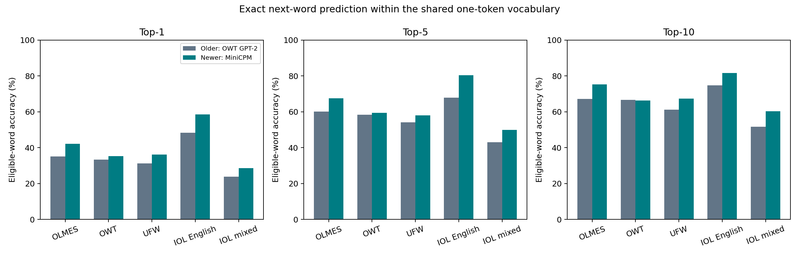
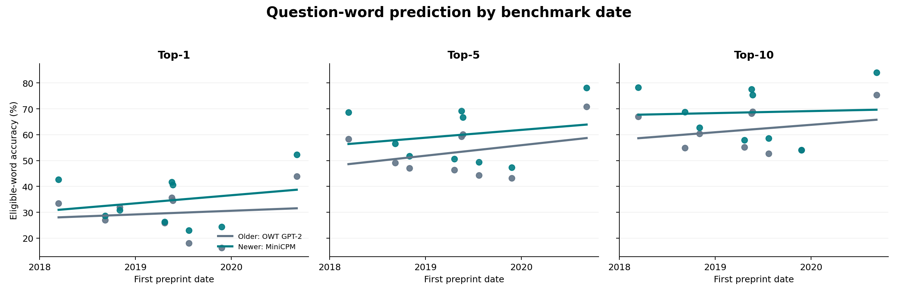
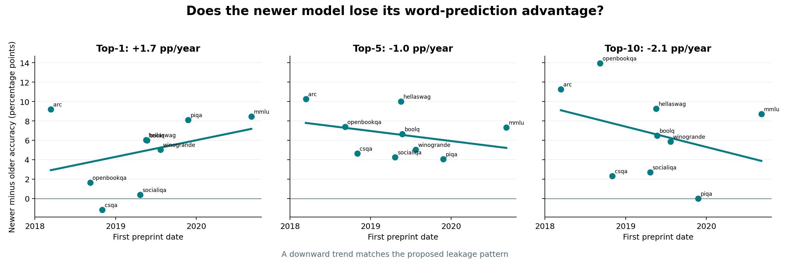

Experiment notes · Language models
Can a model recognize the exam?
A small test of benchmark familiarity, inspired by the question of where pretraining progress comes from.
The newer model predicts more OLMES words, but it improves even more on a genuinely recent English control. Across benchmark dates, top-1 and top-5/top-10 move in opposite directions and every interval includes zero. The rank-based results do not give convincing evidence of leakage.
01 / The question
Better data—or a more familiar exam?
In “Pretraining progress is mostly coming from data,” Dwarkesh Patel and Jerry Han compare combinations of model recipes and data corpora from 2019–2025. They train models from scratch and evaluate downstream capability with OLMES. At their largest tested compute budget, 1019 FLOPs, they report compute-efficiency gains of 12.0× from data improvements and 3.7× from model improvements. They also discuss scale and benchmark dependence.
That made me wonder: when newer data improves performance on an established benchmark, how much might familiarity with the benchmark contribute? Better curation could improve generalization, but benchmark questions and related material can also circulate online.
My experiments are a much smaller probe of that possibility. I did not reproduce their controlled training study, use their trained checkpoints, or measure how much of their reported gain comes from leakage. I compared two existing models and asked how well they predict the wording of benchmark questions.
The distinction matters. A model can be good at solving an unfamiliar question. It can also be good at predicting a familiar-looking sentence without having seen that exact sentence before. I needed controls before interpreting either as memorization.
02 / The method
Predict the question, word by word
I gave each model the first half of a question and asked whether each true next word in the remaining half appeared among its highest-ranked predictions. No answer choices or correct answers were supplied. This measures prediction of the question’s wording, not whether the model can solve it.
“Which material would be best for” “keeping a drink cold?”
Scoring is teacher forced: before every prediction, the model sees all preceding true words. A word counts as a top-1, top-5 or top-10 hit when its exact spelling—including attached punctuation—is among the model’s first 1, 5 or 10 candidates within the shared vocabulary described below. Words are divided only at literal spaces.
Why ranks instead of negative log probability?
Raw negative log probability is sensitive to calibration. Two models can rank the same continuation identically while assigning very different probability values because one produces sharper logits. Top-k accuracy uses only the ordering of predictions, so additive logit shifts and positive temperature rescaling cannot change the result.
The models also use different subword vocabularies. I therefore built a common candidate set containing the 28,853 space-delimited strings that both tokenizers encode as exactly one canonical token. A target is evaluated only when it belongs to this shared set. Multi-token words are excluded from both models rather than counted as failures. The result compares identical word candidates at identical positions; 80.2% of the OLMES pilot’s continuation words are eligible.
This choice trades breadth for comparability. It measures common one-token words rather than every possible word, and top-k ignores how far below the cutoff a miss falls. Reporting top-1, top-5 and top-10 shows whether the conclusion depends on one arbitrary cutoff.
For BoolQ and SocialIQA, the text includes the passage or context followed by the question. The halfway split applies to that combined text, so some predicted words are context. Other tasks use their question stem or completion context.
03 / Experiment 1
Does OLMES look unusually familiar?
The first test compares OLMES with familiar corpus text and genuinely recent human-written material. If exposure gives OLMES an extra wording advantage, its top-k accuracy should be unusually high relative to the controls.
I sampled 30 OLMES items—three from each of its ten standard components—and 30 passages from each of OpenWebText and Ultra-FineWeb. Corpus excerpts were roughly matched to the OLMES lengths. These passages are verified corpus members, not verified records consumed by the selected checkpoints.
For recent material, I used the human-composed 2026 International Linguistics Olympiad problems, published after both checkpoints: 30 non-overlapping mixed-text excerpts from five problems. Because they include unfamiliar languages and tables, I also use ten short English-prose excerpts from those same problems as the fairer sensitivity control.
The rank experiment contains 130 natural-language texts. The earlier hash diagnostic is omitted because each hash is a single space-delimited segment and has no eligible next-word positions.

On OLMES, GPT-2 reaches 35.1% top-1, 60.1% top-5 and 67.2% top-10. MiniCPM reaches 42.2%, 67.6% and 75.3%. The newer-model gains are therefore +7.1, +7.5 and +8.1 percentage points; paired cluster-bootstrap intervals exclude zero for these pilot estimates.
Relative to each model’s own corpus control, the OLMES advantage grows from 1.8 to 6.1 points at top-1, from 1.7 to 9.6 at top-5, and from 0.6 to 7.9 at top-10. That pattern is consistent with extra OLMES familiarity, but the corpus excerpts are not genre-matched and exact checkpoint consumption is unverified.
Expected: the newer model would gain unusually much on OLMES relative to genuinely recent text. Observed: MiniCPM gains 10.3 top-1 points and 12.6 top-5 points on the novel English IOL control—more than its OLMES gains.
Mixed IOL is difficult for both models and has only 52.2% shared-word coverage. English IOL is the fairer sensitivity: its top-1 accuracy is 48.3% for GPT-2 and 58.6% for MiniCPM; top-5 is 67.8% and 80.5%. General language ability can therefore produce an improvement at least as large as the OLMES result.
My read: the control experiment does not isolate exposure. OLMES receives a real rank advantage in this sample, but a post-training English control receives a larger advantage at top-1 and top-5.
04 / Experiment 2
Does the advantage fade on newer benchmarks?
The second test stays within OLMES: order its benchmark families by date and plot top-1, top-5 and top-10 question-word accuracy.
The hypothesis is conditional: if the newer model’s advantage disproportionately reflects exposure to older benchmark wording, and that benefit fades on later benchmarks, its accuracy advantage should decline with benchmark date. The key statistic is the slope of newer-minus-older accuracy.
I froze a separate sample of 30 items per component, 300 in total. There are 296 paired texts with at least one eligible continuation word and 3,842 eligible word positions, identical across models.
The dates are first arXiv submission dates, used as a proxy for benchmark age. They span 2018–2020 and do not establish when each underlying question first appeared. ARC Easy and ARC Challenge share one paper, so I average them into one family. That leaves nine equally weighted families.

Both models’ fitted accuracy rises with benchmark date, although task composition is highly confounded with time. At top-1, the slopes are +1.4 points/year for GPT-2 and +3.1 for MiniCPM. At top-5 they are +4.1 and +3.0; at top-10, +2.9 and +0.8.
The separate model slopes are descriptive. Subtracting GPT-2 accuracy from MiniCPM accuracy tests the proposed pattern more directly.

Expected: MiniCPM’s accuracy advantage would decline on newer benchmarks. Observed: it grows by 1.7 points/year at top-1, but declines by 1.0 at top-5 and 2.1 at top-10. The result changes direction with k.
The descriptive 95% family-bootstrap intervals are [−2.9, +7.9] points/year for top-1, [−3.6, +1.3] for top-5 and [−9.0, +2.9] for top-10. Every interval includes zero.
This is inconclusive, not proof of equal slopes. There are only nine heterogeneous families, MMLU is the only 2020 family, and date is entangled with domain, format and difficulty.
05 / What this means
A useful question, an unresolved explanation
I started with a plausible concern and used word ranks so probability calibration would not decide the result. Experiment 1 remains sensitive to the choice of control. Experiment 2 changes direction across top-1, top-5 and top-10, with every interval crossing zero. Neither gives convincing evidence of leakage, and neither shows that the models are contamination-free.
For the question raised by Patel and Han’s study, the right conclusion is modest: this pilot cannot explain their reported data gains, validate them, or dismiss them. Their experiment varies training recipes and datasets under controlled compute budgets; mine probes wording predictability in two differently sized existing checkpoints.
A better next test would use multiple years of the same exam series, with matched subject and format across a verified training cutoff. Confirmed consumed records would provide stronger positive controls, and multi-token word scoring would broaden coverage.
The lesson I’m taking away is methodological: rank-based prediction avoids calibration, but it does not separate memory from intelligence. Controls that match the benchmark’s language and format remain essential.
06 / Data & report
Inspect the experiment
The PDF contains the shared methodology and both word-rank experiments. The result bundle includes pilot summaries, control contrasts, benchmark-family results, temporal slopes, dates and the candidate-vocabulary definition without redistributing sampled source text.
Run details, uncertainty and model provenance
The control experiment has 130 natural-language texts and 260 model-text rows. The temporal experiment has 296 paired scorable texts and 3,842 eligible word positions per model. Eligible positions and denominators match exactly across models.
Pilot intervals resample document/problem clusters; IOL has only five independent problem clusters. Temporal intervals use 10,000 family resamples over nine families with sampled-item means fixed. The estimates do not address model-size, domain or capability confounding.
Both models ran locally in FP16 on a GTX 1650 with 4 GB of VRAM. The two final rank passes took 107.9 and 103.4 seconds. Five project scoring tests passed, and explicit invariants verified shared candidate IDs and paired coverage. Paid-service cost was $0.
No model or membership probe was trained. The original full-corpus overlap proposal was not completed; corpus samples supplied the controls. Failed search-index requests were not evidence of absence.
Older checkpoint: stanford-crfm/battlestar-gpt2-small-x49, 124,439,808 parameters, pinned June 20, 2022 revision. Newer: openbmb/MiniCPM5-1B-Base, 1,080,632,832 parameters, pinned May 25, 2026 revision. The bundle records exact revisions, benchmark dates and source links.
Sources
- Dwarkesh Patel & Jerry Han: Pretraining progress is mostly coming from data — the study that motivated the question.
- OLMES reference implementation — benchmark suite and pinned implementation.
- Stanford Mistral checkpoint documentation — OpenWebText training provenance.
- IOL 2026 official problem booklet and Problem Committee — recent contest material and authorship provenance.
Experiment and writeup developed with Codex. Results are reported from the saved runs; the schematic hypothesis in the PDF is illustrative, not measured data.